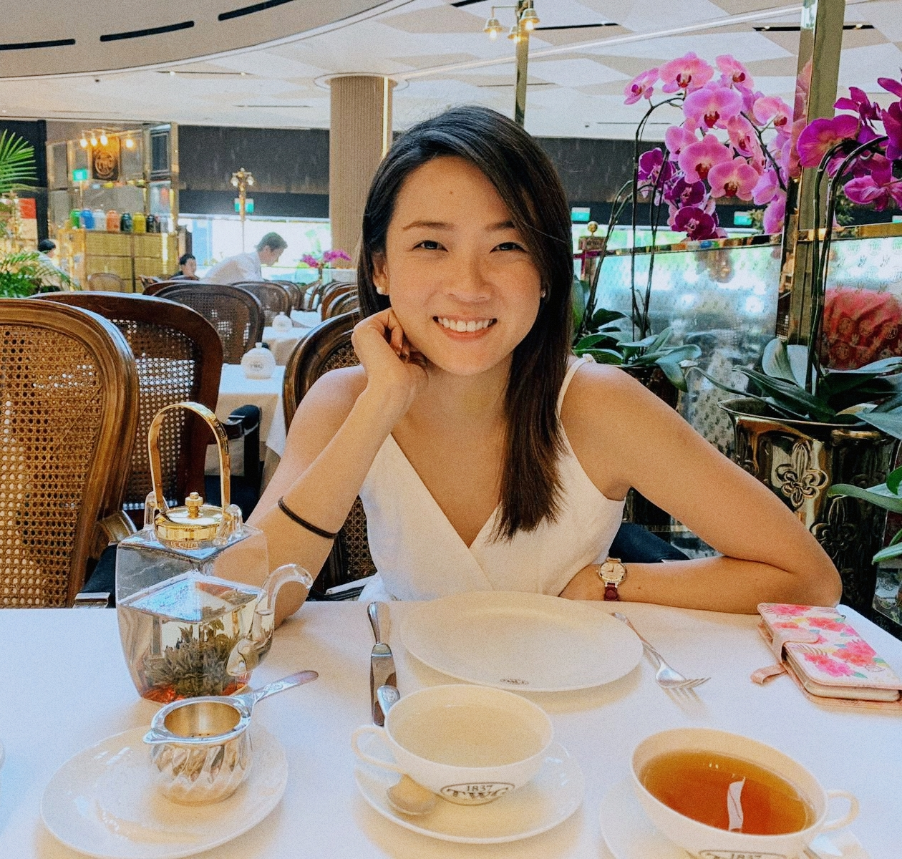

About Me
I'm from Singapore, and I moved to Australia in 2019 to be with my husband.
My background is in the banking industry, and in my previous worklife, I used to work closely with our in-house IT teams and it got me intrigued with what they do behind the scenes. I finally decided to sign up for the coding bootcamp to find out for myself the intricacies of coding, and I'm really enjoying it so far!
In the short run, I'd love to be able to combine my work experience and the knowledge I'm gaining in coding today in a role in the Fintech industry or a startup. In the long run, I want to own my own business that serves a need in the society, working with great people and enjoying every moment of my work.♬
I have a Chihuahua dog called Pebbles, and she is the sweetest pup I could ever ask for. She's ferocious with other people and dogs, but that's only because she's terrified of the world and how much bigger everything else seems to be! My husband and I love going on long walks in the park with Pebbles - she loves being in her own little world with us, and we love her to bits. ❤